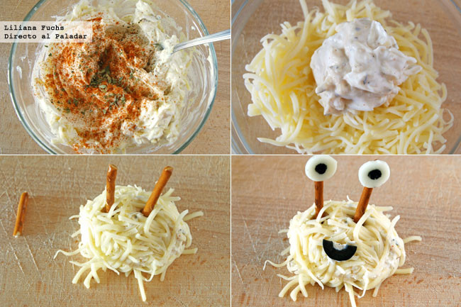

Los cócteles son preparados que se realizan a base de una mezcla de diferentes tipos de bebidas. En la gran mayoría de los casos están formados por uno o más tipos de bebidas alcohólicas. La coctelería se ha convertido casi en una ciencia que cada día suma más seguidores.
3 onzas de crema de coco
3 onzas de jugo de piña
1 1/4 onzas de ron
1 rebanada de piña
En una licuadora mezcle todos los ingredientes y 1 taza de hielo (menos la rodaja de piña).
Sirva en un vaso alto y decore con la rodaja de piña.
1 1/2 tazas de jugo de limón fresco
1 1/2 tazas de tequila
1 1/2 de taza de licor de naranja (ej. Cointreau® o Controy®)
1 limón, cortado en 8 gajos
Sal de grano, al gustoMezcla el agua, jugo de limón, tequila y licor de naranja en una jarra de 2 litros. Mezcla bien.
Para servir, humedece el borde de una copa de margarita con limón y escarcha con la sal. Pon el hielo dentro de la copa y vierte la margarita encima. Decora con una rodaja de limón.
* 2 onzas de tequila
* 1 onza de ron blanco
* 3 onzas de jugo de naranja
Preparar en copa de coctel con el borde escarchado de azúcar corriente, preferentemente morena.
Colocar 1 ó 2 cubos de hielo y verter en orden el tequila, el ron y el jugo.
Decorar con una rodaja de naranja y una cereza roja.
6 quesitos redondos,
3 aceitunas negras sin hueso,
colorante rojo y unas gotas de salsa kétchup.
Empezamos dibujando, con la ayuda de un pincel fino, las venitas en los quesitos con el colorante rojo. Mientras el colorante rojo se seca, vamos laminando las aceitunas negras deshuesadas.
Colocamos un aro de aceituna sobre cada quesito, en el centro y, por último, cubrimos el centro de cada aro con unas gotas de kétchup
Para los cuerpos: 125 g de queso crema, 100 g de queso rallado, 1/2 cucharadita de mostaza, 1/2 cucharadita de orégano, 1/4 cucharadita de pimentón, una pizca de ajo granulado, pimienta negra al gusto.
Para la decoración: 100-125 g de queso rallado, palitos salados, lonchas de queso blanco, aceitunas negras, un poco de queso crema extra, rotulador negro comestible (opcional).
Disponer el queso crema en un cuenco, procurando no echar nada de líquido de suero, si lo tuviera. Añadir el queso rallado, la mostaza, el orégano, el pimentón, el ajo granulado y pimienta negra recién molida al gusto. Mezclar todo bien hasta conseguir una masa homogénea.
Colocar el resto del queso rallado en otro recipiente. Con ayuda de unas cucharillas, tomar porciones de masa, dar forma redondeada y rebozar bien en el queso rallado. Darle la forma deseada y disponerlo en una bandeja o plato aparte. Partir palitos salados de aperitivo hasta dejar la longitud necesaria y pinchar dos o tres en la parte superior.
Recortar las bocas con un buen cuchillo afilado a partir de aceitunas negras. Recortar pequeños círculos de la loncha de queso, con un mini cortador si lo tuviéramos una boquilla redonda, o a mano con un cuchillo. Colorear el centro con un rotulador comestible. Si no tenemos rotulador, podemos recortar un trocito de aceituna y pegarla. Pegar los ojos a los palitos y las aceitunas al cuerpo, usando un poco de queso crema extra.

12 langostinos crudos,
1 huevo, copos de maíz,
pan rallado y aceite de oliva.
Además necesitaréis brochetas de madera.
Comenzamos preparando los copos de maíz para facilitar el empanado. Con un robot de cocina, damos dos o tres toques para triturarlos ligeramente y los mezclamos con el pan rallado, dejando lista la mezcla en un plato para cuando tengamos listos los langostinos.
Para dejar preparados los langostinos, retiramos la cabeza y los pelamos dejando sin quitar la cola para que tengan mejor aspecto. Aprovechamos para quitarles el intestino —esa especie de hilillo negro—.
Para evitar que se encojan al freírlos, los ensartamos en brochetas de madera que les hagan mantener su forma estirada. Después de ensartarlos, cortamos el exceso de brocheta y los sazonamos con un poco de sal.
Finalmente los pasamos por huevo batido y los empanamos con los copos de maíz que habíamos machacado y los freímos en aceite muy caliente para que se doren sin resecarse en el interior. Los escurrimos en papel de cocina y los servimos inmediatamente. Si los queréis congelar, hacedlo una vez empanados pero antes de freírlos.